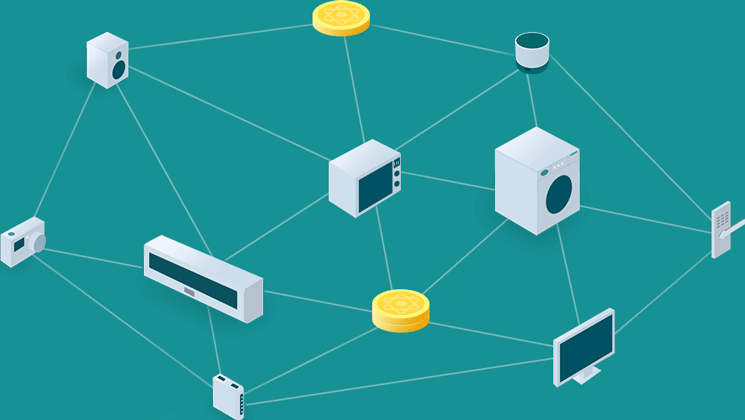
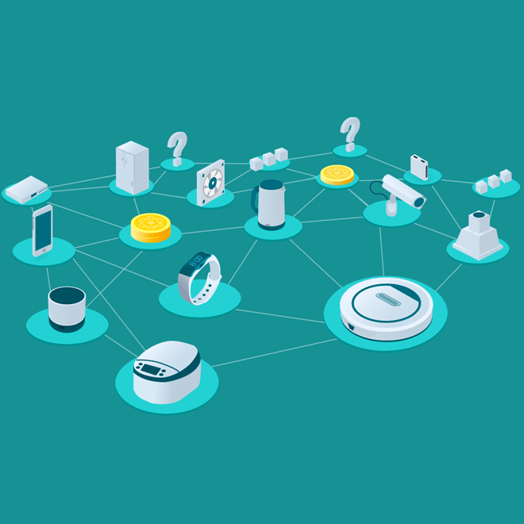
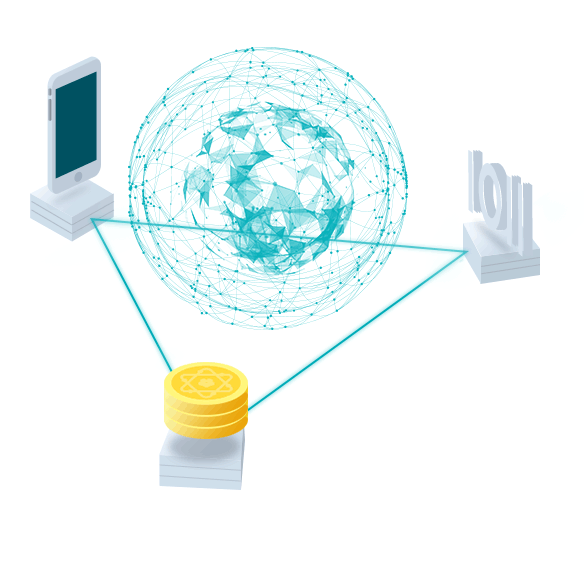

IONChain
将各种物联设备串联起来，实现任意规模、任意类型的物联网节点的接入，并通过DAPP进行互动。解决物联设备数据的安全隐私问题。IONChain will solve the data island dilemma of the IoT devices by creating an interconnected network in order to realize the possibilities of a combined real-time data sharing - a network that facilitates secure, transparent and direct IoT data trading between the owners of data generating devices and the buyers of data
核心壁垒
数据质量证明共识和时间流逝证明共识机制
自研物联网应用层协议
边缘计算
分布式存储
电离算法
……
自研物联网应用层协议
边缘计算
分布式存储
电离算法
……
Every device is a mining machine
Every IoT device in the IONChain that provides valuable data can act as a mining machine. Once connected to the IONChain network, a device will constantly contribute its calculative power via the Ionization Algorithm and thus receive IONC tokens as mining reward.
IONChain has created a unique consensus system to determine the value contributed by IoT devices and therefore the number of IONC token distributed to them as a reward. A device’s contribution is jointly determined by Data Quality Proof Consensus and Time Lapse Proof Consensus. This consensus mechanism will consider a device’s function, data quality and quantity in calculating its contribution.
IONChain has created a unique consensus system to determine the value contributed by IoT devices and therefore the number of IONC token distributed to them as a reward. A device’s contribution is jointly determined by Data Quality Proof Consensus and Time Lapse Proof Consensus. This consensus mechanism will consider a device’s function, data quality and quantity in calculating its contribution.

Every device is a mining machine
Every IoT device in the IONChain that provides valuable data can act as a mining machine. Once connected to the IONChain network, a device will constantly contribute its calculative power via the Ionization Algorithm and thus receive IONC tokens as mining reward.
IONChain has created a unique consensus system to determine the value contributed by IoT devices and therefore the number of IONC token distributed to them as a reward. A device’s contribution is jointly determined by Data Quality Proof Consensus and Time Lapse Proof Consensus. This consensus mechanism will consider a device’s function, data quality and quantity in calculating its contribution.
IONChain has created a unique consensus system to determine the value contributed by IoT devices and therefore the number of IONC token distributed to them as a reward. A device’s contribution is jointly determined by Data Quality Proof Consensus and Time Lapse Proof Consensus. This consensus mechanism will consider a device’s function, data quality and quantity in calculating its contribution.

Edge Computing
Edge computing is a technology that moves the computing power to the devices that generate the data. Instead of processing data on a centralized server, the analytics and knowledge generation are performed by or near the sources of data. Edge computing primarily solves the problems of data volume, privacy protection and instant response.
Both IONChain and edge computing use a distributed architecture therefore both are by nature highly compatible with each other. That makes it possible to fully utilise the computing power of the nodes and to connect IoT devices with an instant computing storage. Application scenarios such as autonomous vehicles, real-time monitoring, VR, etc., will greatly benefit from the enhanced timeliness of the perception-computing-response processes.
Both IONChain and edge computing use a distributed architecture therefore both are by nature highly compatible with each other. That makes it possible to fully utilise the computing power of the nodes and to connect IoT devices with an instant computing storage. Application scenarios such as autonomous vehicles, real-time monitoring, VR, etc., will greatly benefit from the enhanced timeliness of the perception-computing-response processes.
One device - one code - one coin
离子链中每个物联网设备都会扮演矿机的角色，这些物联网设备每时每刻都会产生价值。所有物联网设备一旦接入了离子链网络，即可通过“电离算法”获得token离子币的挖矿奖励。物联网设备挖矿所获得的离子币数量采用独创的数据质量证明共识和时间流逝证明共识机制算法，根据设备功能、数据量、时间及空间多维度进行精确计量。

One device - one code - one coin
离子链中每个物联网设备都会扮演矿机的角色，这些物联网设备每时每刻都会产生价值。所有物联网设备一旦接入了离子链网络，即可通过“电离算法”获得token离子币的挖矿奖励。物联网设备挖矿所获得的离子币数量采用独创的数据质量证明共识和时间流逝证明共识机制算法，根据设备功能、数据量、时间及空间多维度进行精确计量。
合作单位
技术支持
法律支持